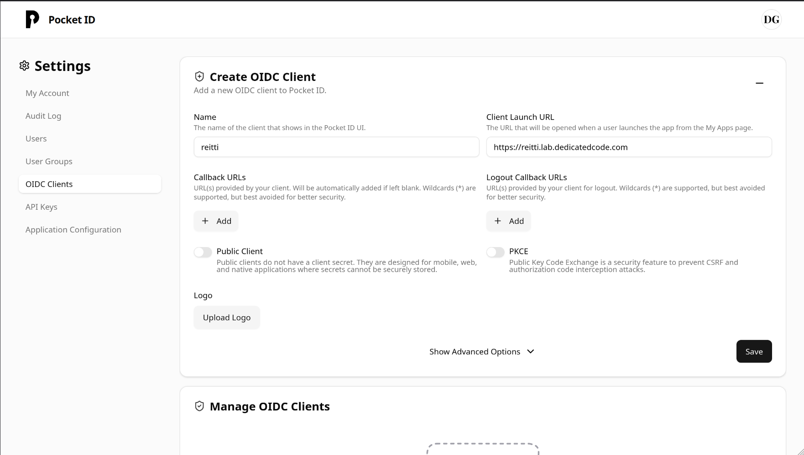
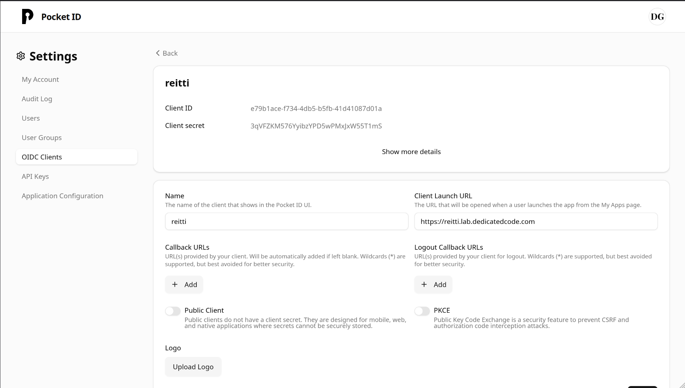

General Information
Reitti can be configured to use an OpenID Connect (OIDC) provider for user authentication. This allows you to integrate Reitti with existing identity management systems and leverage features like single sign-on (SSO) and multi-factor authentication (MFA) provided by your OIDC provider.
Configuration
Docker
To enable OIDC authentication when running Reitti with Docker, you need to set the following environment variables in your docker-compose.yml file under the reitti service.
| Environment Variable | Description | Default Value | Example Value |
|---|---|---|---|
OIDC_ENABLED |
Whether to enable OIDC sign-ins | false |
true |
OIDC_CLIENT_ID |
Your OpenID Connect Client ID (from your provider) | google |
|
OIDC_CLIENT_SECRET |
Your OpenID Connect Client secret (from your provider) | F0oxfg8b2rp5X97YPS92C2ERxof1oike |
|
OIDC_ISSUER_URI |
Your OpenID Connect Provider Discovery URI (don't include the /.well-known/openid-configuration part of the URI) |
https://github.com/login/oauth |
|
OIDC_SCOPE |
Your OpenID Connect scopes for your user (set to the values in the example if you're unsure). This variable is optional. | openid,profile |
openid,profile |
Here's an example of how you might add these to your docker-compose.yml:
services:
reitti:
image: dedicatedcode/reitti:latest
environment:
- OIDC_ENABLED=true
- OIDC_CLIENT_ID=your_client_id
- OIDC_CLIENT_SECRET=your_client_secret
- OIDC_ISSUER_URI=https://your_oidc_provider.com
# ... other configurations
Running from source
When running Reitti directly from its source code, OIDC authentication can be enabled by placing an oidc.properties file in the same directory as your application.properties file. This oidc.properties file should contain the necessary OIDC configuration details.
reitti.security.oidc.enabled=true
spring.security.oauth2.client.registration.oauth.client-id=<client id from your provider>
spring.security.oauth2.client.registration.oauth.client-secret=<client secret from your provider>
spring.security.oauth2.client.provider.oauth.issuer-uri=<url of your provider>
spring.security.oauth2.client.registration.oauth.scope=openid,profile
Additional Configuration
User Registration Control
By default, Reitti automatically creates new user accounts when someone logs in via OIDC for the first time. You can control this behavior with the following setting:
| Environment Variable | Description | Default Value | Example Value |
|---|---|---|---|
OIDC_SIGN_UP_ENABLED |
Whether to automatically create new users on first OIDC login. When disabled, only existing users can log in via OIDC. | true |
false |
Local Authentication Control
You can configure whether users can still use local passwords alongside OIDC authentication:
| Environment Variable | Description | Default Value | Example Value |
|---|---|---|---|
DISABLE_LOCAL_LOGIN |
When enabled, disables local password authentication and clears existing passwords to enforce OIDC-only login. | false |
true |
User Matching and Account Linking
Reitti uses a flexible process to match OIDC users with existing accounts:
- Primary Match: Searches for users by external ID (format:
{issuer}:{subject}) - Fallback Match: If no external ID match, searches by the OIDC
preferred_username - Account Linking: When a username match is found, the account is linked with the external ID for future logins
Username Assignment Logic
When a user logs in via OIDC for the first time, Reitti follows this priority to determine their username:
preferred_usernameclaim from the ID tokenpreferred_usernameclaim from the OIDC user objectpreferred_usernameclaim from user info endpoint (if available)- Email address (
emailclaim) - Generated name (
given_name+ "." +family_namein lowercase) - OIDC subject (
subclaim) as final fallback
This means Reitti will try multiple OIDC claims before falling back to the subject identifier. For example:
- If your OIDC provider supplies
preferred_username: "jane.doe", that becomes the username - If not, but
email: "jane@example.com"is available, that becomes the username - If only
given_name: "Jane"andfamily_name: "Doe"are available, the username becomes"jane.doe" - As a last resort, the OIDC subject (e.g.,
"1234567890") is used
User Data Synchronization
User information is automatically updated from OIDC claims on each login:
- Username: Set from the
preferred_usernameclaim - Display Name: Updated from the
nameclaim - Profile URL: Updated from the
profileclaim (if available) - Avatar: Automatically downloaded from the
pictureclaim (if provided)
Required OIDC Claims
Your OIDC provider must provide these claims for successful authentication:
sub(subject) - Required for external ID generationpreferred_username- Required for username assignmentname- Recommended for display nameprofile- Optional for profile URLpicture- Optional for avatar download
Security Notes
- External IDs are immutable once set, ensuring account security even if usernames change in the OIDC provider
- User data is refreshed on each login to keep information current
- Avatar downloads are performed securely with proper error handling
Provider Examples
This section provides examples of how to configure Reitti with different OpenID Connect providers.
PocketId
PocketId is a self-hosted OpenID Connect provider. You can find more information about the project here.
To configure Reitti to use PocketId:
Create a new client in PocketId:
- Log in to your PocketId instance.
- Navigate to the client registration section.
- Create a new client, providing a name for your Reitti installation (e.g., "Reitti App").
- Crucially, set the URI to the URL of your Reitti installation.
- If you want to be logged out of Reitti when you log out in PocketId, make sure to set the Logout Callback Url to https://
/logout/connect/back-channel/oauth

Obtain Client ID and Client Secret:
After creating the client, PocketId will display a Client ID and a Client Secret. Copy these values.

Configure Reitti:
- For Docker: Set the OIDC_CLIENT_ID and OIDC_CLIENT_SECRET environment variables in your docker-compose.yml file to the values you copied from PocketId.
- For Running from Source: Enter the Client ID and Client Secret into the oidc.properties file for spring.security.oauth2.client.registration.oauth.client-id and spring.security.oauth2.client.registration.oauth.client-secret respectively.
- The OIDC_ISSUER_URI (for Docker) or spring.security.oauth2.client.provider.oauth.issuer-uri (for oidc.properties) should be set to the base URL of your PocketId installation (e.g., https://your-pocketid-domain.com).
Authelia
Authelia is an open-source authentication server that provides single sign-on (SSO) and two-factor authentication. For integrating Reitti with Authelia using OpenID Connect (OIDC), follow these steps:
Generate Client Secret
Run the following command to generate a secure client secret. You must save this value as it cannot be recovered:
docker run authelia/authelia:latest authelia crypto hash generate pbkdf2 \
--variant sha512 \
--random \
--random.length 72 \
--random.charset rfc3986
Configure Authelia
Add the following OIDC client configuration to your Authelia config.yml under identity_providers:oidc:clients, replacing these values:
- <CLIENT-SECRET-DIGEST> with the hash from step 1
- Redirect URIs with your Reitti's actual URLs
- client_id: 'reitti'
client_name: 'Reitti'
client_secret: '<CLIENT-SECRET-DIGEST>'
public: false
scopes:
- 'openid'
- 'profile'
authorization_policy: one_factor
consent_mode: pre-configured
token_endpoint_auth_method: "client_secret_basic"
pre_configured_consent_duration: 1w
redirect_uris:
- https://<your reitti domain>/login/oauth2/code/oauth
- https://<your reitti domain>/login
grant_types:
- refresh_token
- authorization_code
response_types:
- code
response_modes:
- form_post
- query
- fragment
Configure Reitti
For Docker Deployment:
Add these environment variables in your docker-compose.yml file:
- OIDC_CLIENT_ID: Use the client ID ("reitti" as shown above)
- OIDC_CLIENT_SECRET: Use the original secret value (before hashing)
- OIDC_ISSUER_URI: Your Authelia base URL (e.g., https://auth.yourdomain.com)
For Source Deployment:
Configure these properties in oidc.properties:
spring.security.oauth2.client.registration.oauth.client-id=reitti
spring.security.oauth2.client.registration.oauth.client-secret=<original-secret>
spring.security.oauth2.client.provider.oauth.issuer-uri=https://auth.yourdomain.com
After making these changes, restart both Authelia and Reitti for the configuration to take effect.
If you need more information, here is a good tutorial for setting up Immich, the basics are the same for Reitti. blog.lrvt.de/configuring-authelia-oidc-for-immich/
Google can be used as an OpenID Connect provider for Reitti. Because Google does not provide the preferred_username claim, you must request the email scope in addition to openid and profile. The email address will be used as the username fallback.
Steps to obtain the required information
- Create a Google Cloud project (or use an existing one) in the Google Cloud Console.
- Enable the “Google Identity Services” API for the project if it is not already enabled.
- Configure OAuth consent screen
- Choose External or Internal depending on your organization.
- Fill in the required fields (application name, support email, etc.).
- Create OAuth 2.0 credentials
- Go to APIs & Services → Credentials.
- Click Create Credentials → OAuth client ID.
- Select Web application.
- Set Authorized redirect URIs to the Reitti callback URL, e.g.:
https://<your-reitti-domain>/login/oauth2/code/oauth. - After creation, note the Client ID and Client secret.
Configuration
For Docker – add the following environment variables to your docker-compose.yml:
environment:
- OIDC_ENABLED=true
- OIDC_CLIENT_ID=<your-google-client-id>
- OIDC_CLIENT_SECRET=<your-google-client-secret>
- OIDC_ISSUER_URI=https://accounts.google.com
- OIDC_SCOPE=openid,profile,email
For source deployment – add the corresponding entries to oidc.properties (replace placeholders with your values):
spring.security.oauth2.client.registration.oauth.client-id=<your-google-client-id>
spring.security.oauth2.client.registration.oauth.client-secret=<your-google-client-secret>
spring.security.oauth2.client.provider.oauth.issuer-uri=https://accounts.google.com
spring.security.oauth2.client.registration.oauth.scope=openid,profile,email
Important note: Because Google does not supply preferred_username, Reitti will fall back to the email claim for the username. Ensure that the email scope is requested; otherwise login will fail.
With these settings in place, restart Reitti (and the Docker container if applicable) and you should be able to log in using Google accounts.